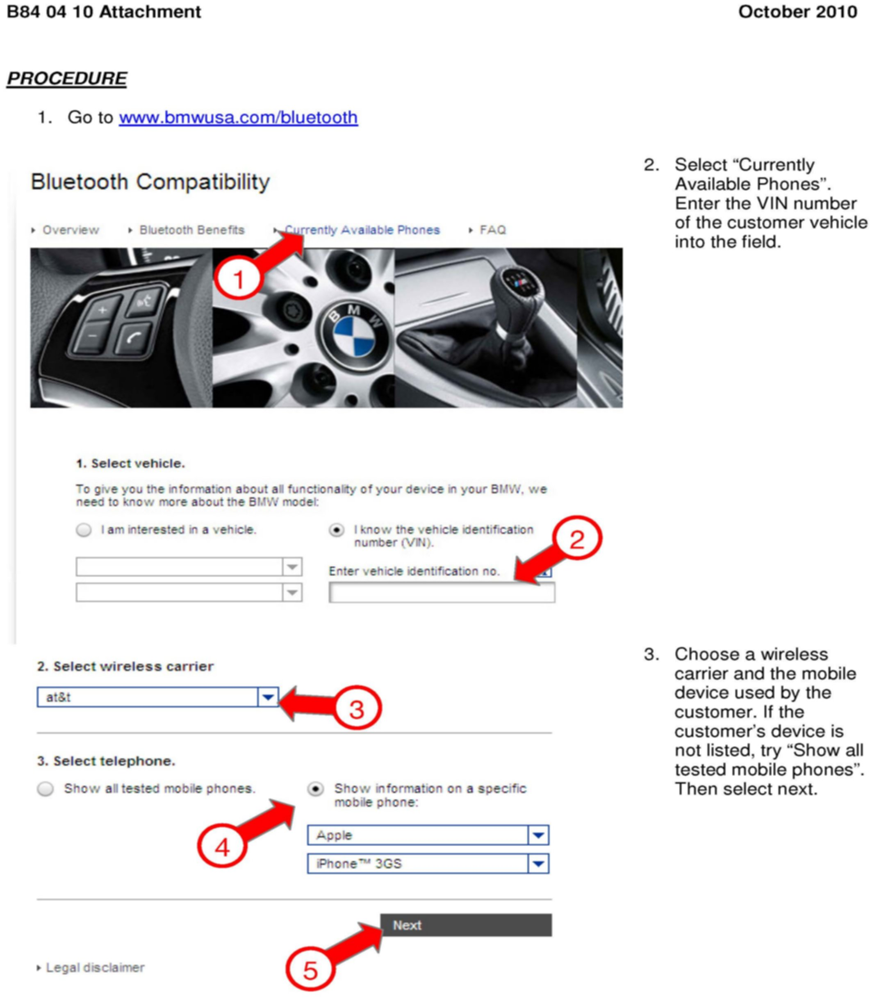
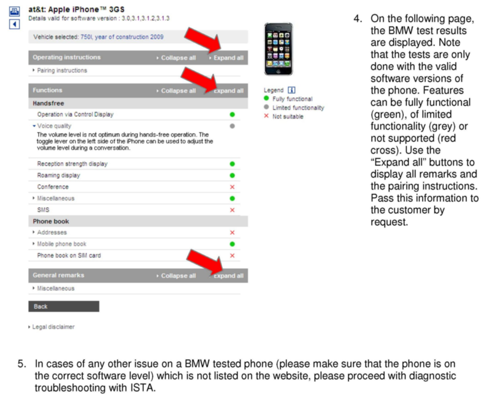

Cell Phone - Bluetooth Compatibility Information
SI B84 04 10Communication Systems
October 2010
Technical Service
SUBJECT
General Bluetooth Information
MODEL
All vehicles with option 644 or 639
SITUATION
The customer experiences termination of the Bluetooth connection during telephone calls; a switch to Privacy mode; or faults during the telephone book transfer for no apparent reason. Some customers might experience voice quality issues in the car or on the landline side.
CAUSE
The terminal device (mobile phone) is most likely not 100% compliant with the BMW Assist Bluetooth hands-free kit.
PROCEDURE
To check restrictions for the customer's terminal device (mobile phone), please refer to the following web site:
www.bmwusa.com/bluetooth
The attachment provides instructions on how to use and interpret the website.
Important note:
Only BMW tested phones are displayed on the web site. A variety of other Bluetooth phones is compatible with the BMW Assist hands-free kit but not tested by BMW. In those cases, please assist the customer in pairing the phone - if the phone still doesn't work with the hands-free kit, inform the customer about Bluetooth compatibility issues. Please send a feedback to:
Bluetooth.Feedback@bmwna.com
Containing information about the phone model (exact model code), used software version, network provider, details about the complaint (vehicle status, phone status, performed action).
If the encountered issues on a BMW tested phone differ from the information provided on the website, please perform diagnostics with the ISTA workshop system and follow the test plan.
WARRANTY INFORMATION
For information only
ATTACHMENTS


ATTACHMENT - PROCEDURE